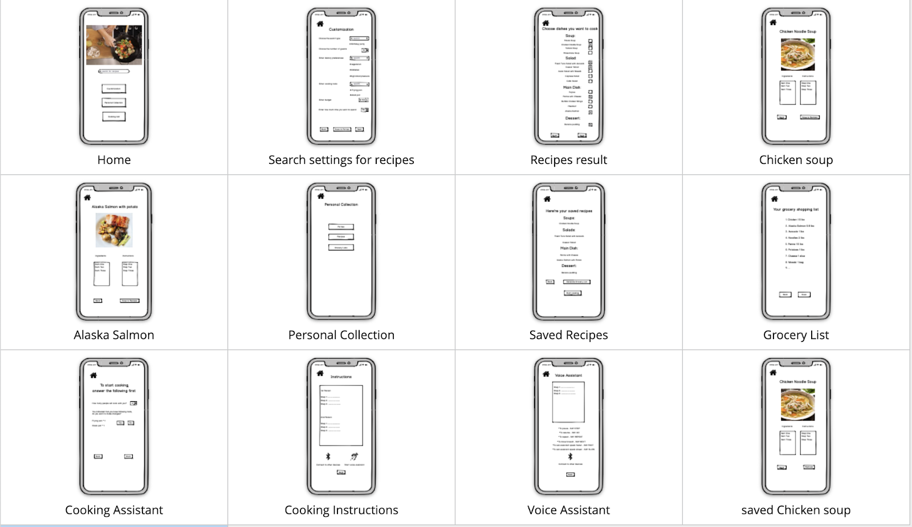
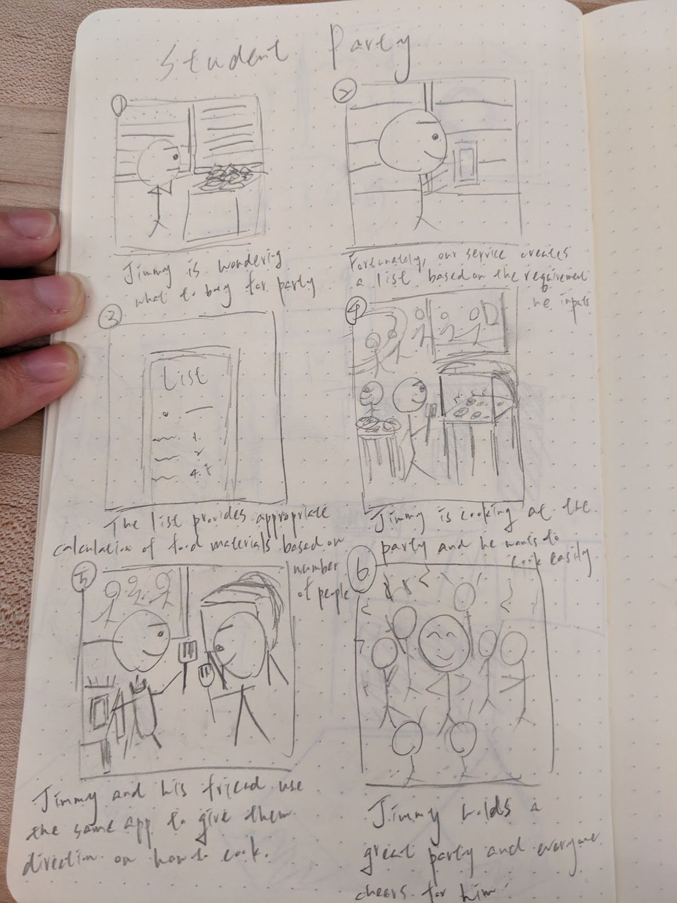

My role on the team
In the beginning, three members of the team each represents three different background of business, user experience and technology, and I am the technology person considering my computer science background. Originally, I supposed myself would be like stopping my teammates from overly relying on technologies and telling them what’s impossible for the techonlogy during the discussion. In the end, it turns out that I am the one overly relying on technical solutions, since we keep refining our solutions based on the user research we have been conducted.
Design question and the process
Our final design question in this studio is “How can we make it more efficient for people to prepare meals for a large group of people with different dietary habits before parties in the kitchen?”. We found that the majority of people surveyed admit that preparing for dinner parties is difficult: 69% of women admit to taking a day off to prepare for their dinner party; 84% have lied to their partner about how much they spend on a dinner party(source).
And we also found typical online recipes are not helpful at all: their advice is often too general and vague, not suitable for making multiple dishes simultaneously, or requiring massive efforts to study. Moreovoer, Half of Americans host home parties at least once a month (source) and more than half of Americans eat gluten-free, vegetarian, vegan, or no-dairy meals. (source). It is quite clear that people who are going to host a party could use a solution that help them better in preparing for food party and dealing with different dietary habits at one time. Our target users in this scope is people who are going to host a food party for a large group (5-20) of people and inexperienced at it.
We were mostly looking for articles from culinary magazines, searching for famous bloggers on organizing large parties, reading recommendations from nutritionists. However, the most difficult part for us is to have the quantitiy data. It’s really hard to have market share estimation and numbers of people suffering from the problem. It is clear that the problem exists but it is hard to know how big it is at the same time. If we could the secondary research again, we should make sure that not only we have the easy access to target environment for observation but also easy access to clear and comprehensive both qualitative and quantiative data. We also conduct a survey on our intended topics.
Based on results from secondary research, and twice field studies in public kitchen of an apartment we conducted, we came up with several design requirements from high to low priority.
High Priority
[User] Our solution should be easy and convenient to use in the kitchen.
[Justification] Although people use smartphones in kitchen, it is currently inconvenient becauseThey have to use their hands.
[Technology] Our solution should utilize audio interaction.
[Justification] People listen to music a lot in the kitchen, so the audio could be a convenient media.
[Technology] Our solution should be able to be used on smartphones/tablets/laptops.
[Justification] According to our survey, most people still rely on smartphones/tablets/laptops to do theirplanning and cooking and not buy new devices.
Medium Priority
[User] Our solution should help users accommodate different dietary restrictions. [Justification] In our survey, 30% of people who don’t ask for guests’ dietary restrictions before planning party claimed that it’s hard for them to accommodate different restrictions and this is in parallel with our assumption.
[User] Our solution should be better and more convenient way than existing solutions.
[Justification] People rely on smartphones mostly even though their hands are dirty.
[Business] The pricing of our solution should be around $20.
[Justification] More than 40% of people surveyed are willing to pay more than $20 for our service.
[User] Our solution should accommodate multiple users at the same time.
[Justification] Half of our survey takers work with others when cooking for food party, so it is best for us to let them use our product at the same time.
[User] Our solution should include helping our users to plan for special occasions and events.
[Justification] 60% of our survey takers claim that their top priority for planning the party is based on the occasion or reason of the party (e.g. birthday, Thanksgiving).
[User] Our solution should reduce the effort and time it takes to prepare a meal for a large group of people.
[Justification] Effort and time spent on preparing food are prioritized by most of our survey takers.
Low Priority
[User] Our solution should accommodate different cooking tools.
[Justification] We observe different cooking tools (e.g. normal kitchen, grilling rack) used in our different times of field sudy.
[User] Our solution should take into consideration the availability of ingredients.
[Justification] Availability of material is prioritized by most of our survey takers.
[User] Our solution should provide estimation of the amount of food to be prepared.
[Justification] We noticed left-over problem in both our observations and people complain about cost in our research.
[Business] Our solution should be advertised in different fashion from existing solutions.
[Justification] Since online tutorial/recipe are our major competition in the market, we might try to separate ourselves from them in marketing and image branding.
[User] Our solution should create a shopping list for ingredients for the entire party planning.
[Justification] In our secondary research, the cost of the party is people worrying about. Our solution should calculate accurately and output the shopping list for people to refer to.
We basically build our solution around design requirements, so we came up with four principles “convenience”, “voice assistant”, “multitask”, “planning”:
- Convenience: Easily accessed recipes, generated shopping list, instructions
- Voice Assistant: Hands-free experience in kitchen.
- Multitask: Clear directions and multitask planning algorithm.
- Planning: Comprehensive organizing party
Then we came up with a low-fidelity app-like prototype have these features. Here is the prototype link. We use online prototyping tools Balsamiq to create the prototype. 
The things we learned from tests show are majorly discrepency between users’ understanding and ours about our prototypes. For example, users in the beginning did not quite understand the workflow of our prototype, and some users even questioned design of some buttons and functions.
Reflection for entire design thinking journey
We use a lot of techniques during this process, for example, brainstorming, sketching, affinity diagram, etc. Personally my favorite ones are sketching and creating persona for the design question. These techniques allow us to review our imagined solution more discretely and realistically. 
To people with engineering background like me, the process and techniques used in design thinking are really mind-blowing. Most of the time engineers spend too much time on the solution, rather than the question itself. As a result, products without guidance like user research techniques are mostly solving problems that do not exist at all. It is really a valuable experience to learn and apply such skillset to focus on the question first and thoroughly.